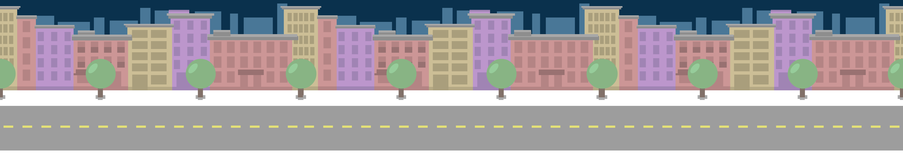

Projetos
Sweet Race
1° Lugar no projeto My First Game 2021.
O jogo permite o jogador controlar seu carro pelas ruas de Sweet,
a cidade onde o game se passa. O objetivo do player não ficar sem
vidas e ainda acumular pontos. Essa cidade é conhecida por ser fofa
e agradável, mas o trânsito fica cada vez mais perigoso. A motivação
do player é se manter vivo, enquanto a motivação dos obstáculos é
somente chegar o mais rápido em seu destino. As setas de orientação,
que irão movimentar o player pela extensão da rua, a cada ponto a
velocidade aumenta, e a cada batida as vidas diminuem.

computacaoifg.com.br